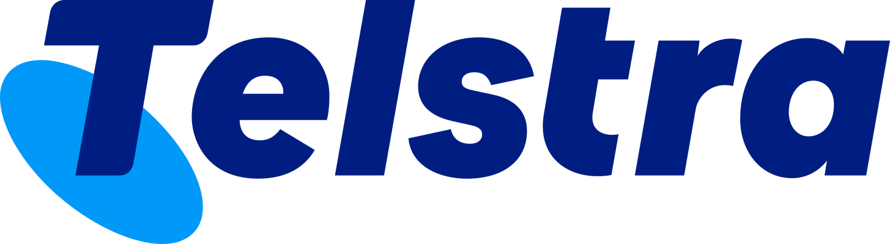

Data pipelines
Ingestion and transformation across batch and streaming sources, with reusable patterns and downstream-ready data.
ADF · Spark · Kafka · AirflowVancouver, BC 49.28° N · 123.12° W
Ankit Chhikara Senior Software Engineer · Data Platforms
Six years engineering dependable data platforms and ML workflows at Telstra. Now pursuing a Master of Data Science at UBC.
Move your cursor to stir the flock
01 · About
I’m Ankit, a senior software engineer focused on data platforms and pursuing a Master of Data Science at UBC. Over six years at Telstra, I’ve worked across cloud data platforms, ML operations, streaming analytics, and production software.
I enjoy the engineering between a promising idea and a system people can rely on: dependable ingestion, useful quality checks, and monitoring that helps teams understand what is happening.
02 · What I work on
Core areas from my work across data platforms, model operations, and software engineering.
Ingestion and transformation across batch and streaming sources, with reusable patterns and downstream-ready data.
ADF · Spark · Kafka · AirflowLake and warehouse workflows that connect data stores, orchestration, and analytics teams.
Azure · AWS · ADLS · RedshiftModel onboarding pipelines, performance tracking, and dashboards for training data and model output.
AWS · QuickSight · MonitoringData quality checks, pipeline observability, incident alerts, and CI/CD for systems teams need to operate.
Grafana · PagerDuty · Jenkins03 · Career highlights · Telstra
A few examples of the data and ML platforms I built and operated across my Telstra career.
Data platform · Azure
Built and maintained Azure Data Factory pipelines for data ingestion and transformation, landing Parquet data in ADLS and replicating it to PostgreSQL for downstream access. Used Databricks and Control-M to run and monitor analytics workflows, with modular pipelines designed for new sources and requirements.
Azure Data Factory · ADLS · Databricks · PostgreSQL · Control-M
ML operations · AWS
Designed AWS data pipelines for ML model onboarding, defined onboarding rules and model performance metrics, and built QuickSight dashboards to monitor training data and model output.
AWS · ML onboarding · Amazon QuickSight
Data & ML platform · Streaming
Developed large-scale Scala and Spark ingestion pipelines connecting Salesforce, SFTP, and Kafka sources to Hive and PostgreSQL. Added a centralized pipeline-monitoring framework and connected PagerDuty and Grafana for alerting and job tracking.
Scala · Spark · Kafka · Hive · PostgreSQL · Grafana
Platform migration · Azure
Partnered with product managers to redesign pipelines and move data flows from Informatica to Azure. The migration achieved $1M in operational cost savings; supporting work included CI/CD, data-quality controls, and automated warehouse and quality-monitoring workflows.
Azure Data Factory · SQL Server · ADLS · Docker · Jenkins
04 · Work experience


Telstra–Accenture joint venture
Apr 2023 – Present · Remote
Telstra · Datacore, ML operations & ONE Analytics
Data ingestion and transformation on Azure, AWS model-onboarding pipelines, and Scala/Spark data workflows for streaming analytics.
Dec 2021 – Apr 2023 · Bengaluru
Telstra · Data platforms
Informatica-to-Azure migration, Redshift warehouse design, Airflow orchestration, and automated data-quality monitoring.
Dec 2020 – Dec 2021 · Bengaluru
Telstra · Software engineering
Java and Spring microservices, AWS workflows, CI/CD, automated testing, and environment-status dashboards.
05 · Toolkit
06 · Education
Vancouver, Canada · 2026–2027
The University of British Columbia
Graduate study in data scienceNew Delhi, India · 2016–2020
Netaji Subhas Institute of Technology
Electrical, Electronics and Communications Engineering07 · Field notes
Notes from the UBC MDS program, Vancouver, and small analyses along the way.
08 · Contact · Vancouver, BC
Interested in data engineering, data platforms, or ML operations? I’d be glad to connect.